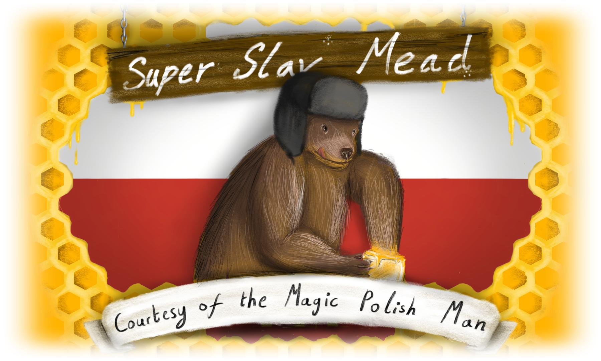
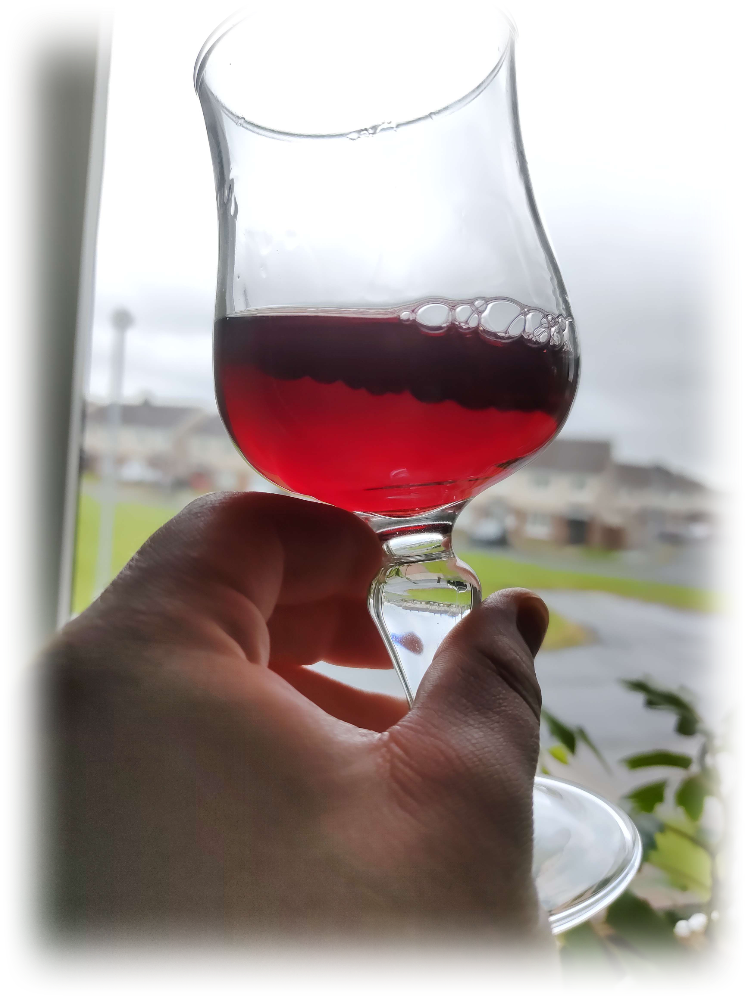

Winemaking

I first got into homebrewing when I went on a trip to the Killarney brewery where I had the pleasure to try some mead, (Honey Wine) and caught an appetite for it.
After some time I figured out that proper mead is crazy expensive and many alcohol shops told me I'd be better off making it myself
CHALLENGE ACCEPTED.
And so over the next while I went on to look up tutorials and recipes on the topic. Even making my own label I'd end up using...

I have since went on to experiment alot, stocking up quite a collection of my brew, even selling it to some friends for a tiny profit.


| Blackberry | Blueberry | Strawberry | Peach Apricot | Plums | |
| Fresh or Frozen Fruit | 4 - 6 pounds | 3 pounds | 3 - 5 pounds | 3 - 5 pounds | 4 - 5 pounds |
| Pectic Enzyme | 3/4 Tsp | 3/4 tsp | 3/4 tsp | 3/4 tsp | 3/4 tsp |
| Dextrose | 2 1/4 Pounds | 2 1/4 Pounds | 1 3/4 pounds | 2 pounds | 2 pounds |
| Nutrients | 1 tsp | 1 tsp | 1 tsp | 1 tsp | 1 tsp |
| Acid Blend | 1/2 Tsp | 1 1/2 Tsp | 1/2 Tsp | 1 1/2 Tsp | 1/2 Tsp |
| D. Phosphate | 1 tsp | 1 tsp | 1 tsp | 1 tsp | 1 tsp |
| Campden Tablets | 2 | 2 | 2 | 2 | 2 |
| Yeast | Montrachet or K1V-1116 | Montrachet or K1V-1116 | Montrachet or K1V-1116 | Cotes du Blanc or Lalvin D-47 | Montrachet or K1V-1116 |